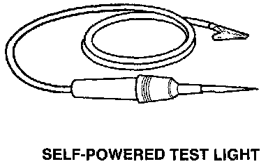

Self-Powered Test Light and DVOM
Five-Step Troubleshooting:

Use a self-powered test light to check for continuity. This tool is made up of a light bulb, battery, and two leads. To test it, touch the leads together: the light should go on.
Use a self-powered test light only on an unpowered circuit. First, disconnect the battery, or remove the fuse that feeds the circuit you are working on. Select two points in the circuit between which you want to check continuity. Connect one lead of the self-powered test light to each point. If there is continuity, the test light's circuit will be completed, and the light will go on.
If, in addition, you need to know exactly how much resistance there is between two points, use a Digital Volt/Ohmmeter (DVOM).
In the "OHMS" range, the DVOM will show resistance between two points along a circuit. Low resistance means good continuity.
Diodes and solid-state devices in a circuit can make a DVOM give a false reading. To check a reading, reverse the leads, and take a second reading. If the readings differ, the component is affecting the measurement.